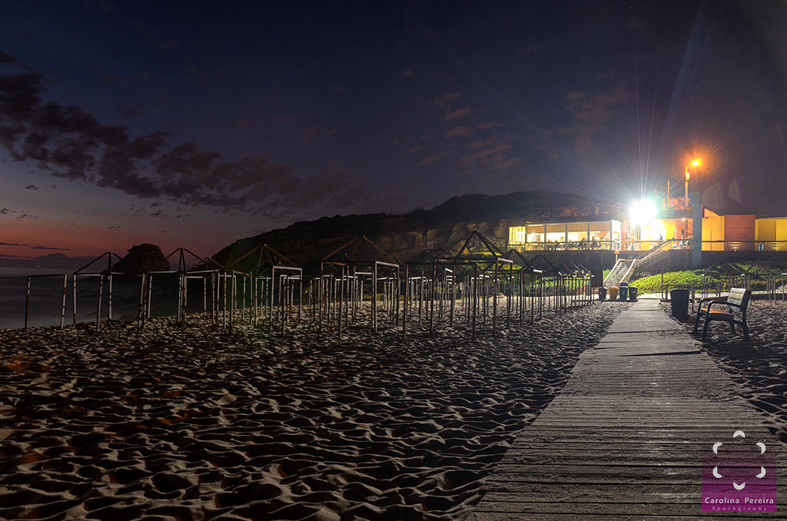

What is lua
lua is a restaurant serving western dishes and deserts, as much as the taste takes you to the moon, lua scenery is also out of the world
lua is a restaurant serving western dishes and deserts, as much as the taste takes you to the moon, lua scenery is also out of the world
lua is on the beach of Dir Al-ballah, as you may have heard Dir Al-ballah is a quite city that lights go out right after isha prayer, as such with no lights and noise it is the perfect place for peaceful and relaxing dinners.


well where else could you find the taste and the scenery to enjoy beautiful dinners with your beloveds.

well you may not beleive it but this man is the current head of the resturant, yeah a white man in Gaza, there is a syrian Warif Shawerma why not a random white dude with a cafe in Dir al-ballah
well here is the father of the current owner in his young days, yeah that's young, he has a chinese gene in him, he livid past 100 years, current state unknown, some say he went ahead to enjoy his prime years in some island
hello I'm the true owner behind the scenes, and as you may have guessed the one who wrote all this fiction above, well you might wonder why did I bother to write all this above?, I don't know I just wrote whatever came to mind, as wellas this was the first page I started working on so I spent my time writing whatever I liked and to top it off here is an inline of the song that is playing while I am writing this paragraph, maybe I should insert the lyrics version
PS:I copied and pasted the embeded iframe given from youtube but it didn't work it showed video unavilable for different videos, till me if you see the mistake, in the meantime here is another iframe